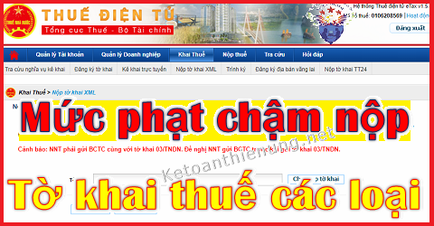

Mức phạt chậm nộp tờ khai thuế GTGT, TNCN, môn bài, chậm nộp tờ khai quyết toán thuế TNDN, TNCN; Quy định về xử phạt nộp chậm hồ sơ khai thuế mới nhất hiện nay.
Căn cứ theo Nghị định 125/2020/NĐ-CP ngày 19/10/2020 có hiệu lực từ ngày 05/12/2020 quy định mức phạt chậm nộp hồ sơ khai thuế, cụ thể như sau:
1. Việc xử phạt vi phạm hành chính về thuế, hóa đơn được thực hiện theo quy định của pháp luật về quản lý thuế và pháp luật về xử lý vi phạm hành chính.
2. Tổ chức, cá nhân chỉ bị xử phạt vi phạm hành chính về thuế, hóa đơn khi có hành vi vi phạm hành chính về thuế, hóa đơn theo quy định tại Nghị định này.
3. Tổ chức, cá nhân thực hiện nhiều hành vi vi phạm hành chính thì bị xử phạt về từng hành vi vi phạm, trừ các trường hợp sau:
- Trường hợp cùng một thời điểm người nộp thuế chậm nộp nhiều hồ sơ khai thuế của nhiều kỳ tính thuế nhưng cùng một sắc thuế thì chỉ bị xử phạt về một hành vi chậm nộp hồ sơ khai thuế có khung phạt tiền cao nhất trong số các hành vi đã thực hiện theo quy định tại Nghị định này và áp dụng tình tiết tăng nặng vi phạm nhiều lần.
- Trường hợp trong số hồ sơ khai thuế chậm nộp có hồ sơ khai thuế chậm nộp thuộc trường hợp trốn thuế thì tách riêng để xử phạt về hành vi trốn thuế;
- Trường hợp cùng một thời điểm người nộp thuế chậm nộp nhiều thông báo, báo cáo cùng loại về hóa đơn thì người nộp thuế bị xử phạt về một hành vi chậm nộp thông báo, báo cáo về hóa đơn có khung phạt tiền cao nhất trong số các hành vi đã thực hiện quy định tại Nghị định này và áp dụng tình tiết tăng nặng vi phạm nhiều lần;
a) Cảnh cáo
- Phạt cảnh cáo áp dụng đối với hành vi vi phạm thủ tục thuế, hóa đơn không nghiêm trọng, có tình tiết giảm nhẹ và thuộc trường hợp áp dụng hình thức xử phạt cảnh cáo theo quy định tại Nghị định này.
b) Phạt tiền
- Phạt tiền tối đa không quá 100.000.000 đồng đối với tổ chức thực hiện hành vi vi phạm hành chính về hóa đơn. Phạt tiền tối đa không quá 50.000.000 đồng đối với cá nhân thực hiện hành vi vi phạm hành chính về hóa đơn.
- Phạt tiền tối đa không quá 200.000.000 đồng đối với người nộp thuế là tổ chức thực hiện hành vi vi phạm thủ tục thuế. Phạt tiền tối đa không quá 100.000.000 đồng đối với người nộp thuế là cá nhân thực hiện hành vi vi phạm thủ tục thuế.
III. Nguyên tắc áp dụng mức phạt tiền:
a) Mức phạt tiền quy định tại Điều 13 dưới đây là mức phạt tiền áp dụng đối với tổ chức.
- Đối với người nộp thuế là hộ gia đình, hộ kinh doanh áp dụng mức phạt tiền như đối với cá nhân.
b) Khi xác định mức phạt tiền đối với người nộp thuế vi phạm vừa có tình tiết tăng nặng, vừa có tình tiết giảm nhẹ thì được giảm trừ tình tiết tăng nặng theo nguyên tắc một tình tiết giảm nhẹ được giảm trừ một tình tiết tăng nặng.
c) Các tình tiết giảm nhẹ hoặc tăng nặng đã được sử dụng để xác định khung tiền phạt thì không được sử dụng khi xác định số tiền phạt cụ thể theo điểm d khoản này.
d) Khi phạt tiền, mức phạt tiền cụ thể đối với một hành vi vi phạm thủ tục thuế, hóa đơn là mức trung bình của khung phạt tiền được quy định đối với hành vi đó.
- Nếu có tình tiết giảm nhẹ, thì mỗi tình tiết được giảm 10% mức tiền phạt trung bình của khung tiền phạt nhưng mức phạt tiền đối với hành vi đó không được giảm quá mức tối thiểu của khung tiền phạt;
- Nếu có tình tiết tăng nặng thì mỗi tình tiết tăng nặng được tính tăng 10% mức tiền phạt trung bình của khung tiền phạt nhưng mức phạt tiền đối với hành vi đó không được vượt quá mức tối đa của khung tiền phạt.
-------------------------------------------------------------------------------------
Bước 1:
- Trước khi xem mức phạt chậm nộp tờ khai thuế thì các bạn cần xác định được Doanh nghiệp mình chậm nộp hồ sơ khai thuế bao nhiêu ngày.
-> Chi tiết về việc thời hạn nộp hồ sơ khai thuế như: Thời hạn nộp Tờ khai thuế môn bài, Tờ khai thuế GTGT, TNCN, thời hạn nộp Tờ khai Quyết toán thuế TNDN, TNCN ...
Bước 2:
-> Sau khi đã xác định được số ngày chậm nộp hồ sơ khai thuế -> Các bạn đối chiếu xuống quy định bên dưới nhé:
Căn cứ theo Điều 13 Nghị định 125/2020/NĐ-CP: Quy định xử phạt hành vi chậm nộp hồ sơ khai thuế so với thời hạn quy định, cụ thể như sau:
| MỨC PHẠT | SỐ NGÀY CHẬM NỘP - HÀNH VI |
|---|---|
| 1. Phạt cảnh cáo |
- Đối với hành vi nộp hồ sơ khai thuế quá thời hạn từ 01 ngày đến 05 ngày và có tình tiết giảm nhẹ. |
|
2. Phạt tiền từ 2.000.000 đồng đến 5.000.000 đồng |
- Đối với hành vi nộp hồ sơ khai thuế quá thời hạn từ 01 ngày đến 30 ngày, trừ trường hợp quy định tại khoản 1 nêu trên. |
|
3. Phạt tiền từ 5.000.000 đồng đến 8.000.000 đồng |
- Đối với hành vi nộp hồ sơ khai thuế quá thời hạn quy định từ 31 ngày đến 60 ngày. |
|
4. Phạt tiền từ 8.000.000 đồng đến 15.000.000đồng |
|
|
5. Phạt tiền từ 15.000.000đồng đến 25.000.000đồng |
- Đối với hành vi nộp hồ sơ khai thuế quá thời hạn trên 90 ngày kể từ ngày hết hạn nộp hồ sơ khai thuế, có phát sinh số thuế phải nộp và người nộp thuế đã nộp đủ số tiền thuế, tiền chậm nộp vào ngân sách nhà nước trước thời điểm cơ quan thuế công bố quyết định kiểm tra thuế, thanh tra thuế hoặc trước thời điểm cơ quan thuế lập biên bản về hành vi chậm nộp hồ sơ khai thuế theo quy định tại khoản 11 Điều 143 Luật Quản lý thuế. - Trường hợp số tiền phạt nếu áp dụng theo khoản này lớn hơn số tiền thuế phát sinh trên hồ sơ khai thuế thì số tiền phạt tối đa đối với trường hợp này bằng số tiền thuế phát sinh phải nộp trên hồ sơ khai thuế nhưng không thấp hơn mức trung bình của khung phạt tiền quy định tại khoản 4 Điều này. |
Chú ý: Ngoài việc bị phạt về hành vi chậm nộp hồ sơ khai thuế nêu trên - -> Nếu trường hợp dẫn đến chậm nộp tiền thuế thì còn bị phạt vì tội chậm nộp tiền thuế.
Ví dụ: Doanh nghiệp A chậm nộp Tờ khai thuế môn bài và Tiền thuế môn bài.
-> Thì sẽ bị phạt 2 hành vi là: Chậm nộp tờ khai thuế + Chậm nộp tiền thuế.
----------------------------------------------------------------------------------
V. Những trường hợp không xử phạt vi phạm hành chính về thuế:
1. Người nộp thuế chậm thực hiện thủ tục thuế, hóa đơn bằng phương thức điện tử do sự cố kỹ thuật của hệ thống công nghệ thông tin được thông báo trên Cổng thông tin điện tử của cơ quan thuế thuộc trường hợp thực hiện hành vi vi phạm do sự kiện bất khả kháng quy định tại khoản 4 Điều 11 Luật Xử lý vi phạm hành chính. -> Thì Không xử phạt vi phạm hành chính về thuế, hóa đơn.
2. Không xử phạt vi phạm hành chính về thuế, không tính tiền chậm nộp tiền thuế đối với người nộp thuế vi phạm hành chính về thuế do thực hiện theo văn bản hướng dẫn, quyết định xử lý của cơ quan thuế, cơ quan nhà nước có thẩm quyền liên quan đến nội dung xác định nghĩa vụ thuế của người nộp thuế (kể cả các văn bản hướng dẫn, quyết định xử lý được ban hành trước ngày Nghị định này có hiệu lực), trừ trường hợp thanh tra, kiểm tra thuế tại trụ sở người nộp thuế chưa phát hiện sai sót của người nộp thuế trong việc khai, xác định số tiền thuế phải nộp hoặc số tiền thuế được miễn, giảm, hoàn nhưng sau đó hành vi vi phạm hành chính về thuế của người nộp thuế bị phát hiện.
3. Không xử phạt vi phạm hành chính về thuế đối với trường hợp khai sai, người nộp thuế đã khai bổ sung hồ sơ khai thuế và đã tự giác nộp đủ số tiền thuế phải nộp trước thời điểm cơ quan thuế công bố quyết định kiểm tra thuế, thanh tra thuế tại trụ sở người nộp thuế hoặc trước thời điểm cơ quan thuế phát hiện không qua thanh tra, kiểm tra thuế tại trụ sở của người nộp thuế hoặc trước khi cơ quan có thẩm quyền khác phát hiện.
4. Không xử phạt hành vi vi phạm thủ tục thuế đối với cá nhân trực tiếp quyết toán thuế thu nhập cá nhân chậm nộp hồ sơ quyết toán thuế thu nhập cá nhân mà có phát sinh số tiền thuế được hoàn; hộ kinh doanh, cá nhân kinh doanh đã bị ấn định thuế theo quy định tại Điều 51 Luật Quản lý thuế.
5. Không xử phạt hành vi vi phạm về thời hạn nộp hồ sơ khai thuế trong thời gian người nộp thuế được gia hạn nộp hồ sơ khai thuế đó.
------------------------------------------------------------------------------
Chú ý: Trước ngày 5/12/2020 thì Mức phạt chậm nộp Tờ khai thuế được áp dụng theo Điều 9 Thông tư 166/2013/TT-BTC, cụ thể như sau:
| MỨC PHẠT | SỐ NGÀY CHẬM NỘP (Hành vi) |
| Phạt cảnh cáo | - Đối với hành vi nộp hồ sơ khai thuế quá thời hạn quy định từ 01 ngày đến 05 ngày mà có tình tiết giảm nhẹ. |
| Phạt tiền 700.000 đồng |
- Đối với hành vi nộp hồ sơ khai thuế cho cơ quan thuế quá thời hạn quy định từ 01 ngày đến 10 ngày (trừ trường hợp quy định tại Khoản 1 Điều này). - Nếu có tình tiết giảm nhẹ thì mức tiền phạt tối thiểu không thấp hơn 400.000 đồng - Nếu có tình tiết tăng nặng thì mức tiền phạt tối đa không quá 1.000.000 đồng. |
| Phạt tiền 1.400.000 đồng |
- Đối với hành vi nộp hồ sơ khai thuế cho cơ quan thuế quá thời hạn quy định từ trên 10 ngày đến 20 ngày. - Nếu có tình tiết giảm nhẹ thì mức tiền phạt tối thiểu không dưới 800.000 đồng. - Nếu có tình tiết tăng nặng thì mức tiền phạt tối đa không quá 2.000.000 đồng. |
| Phạt tiền 2.100.000 đồng |
- Đối với hành vi nộp hồ sơ khai thuế cho cơ quan thuế quá thời hạn quy định từ trên 20 ngày đến 30 ngày. - Nếu có tình tiết giảm nhẹ thì mức tiền phạt tối thiểu không thấp hơn 1.200.000 đồng. - Nếu có tình tiết tăng nặng thì mức tiền phạt tối đa không quá 3.000.000 đồng. |
| Phạt tiền 2.800.000 đồng |
- Đối với hành vi nộp hồ sơ khai thuế cho cơ quan thuế quá thời hạn quy định từ trên 30 ngày đến 40 ngày. - Nếu có tình tiết giảm nhẹ thì mức tiền phạt tối thiểu không thấp hơn 1.600.000 đồng. - Nếu có tình tiết tăng nặng thì mức tiền phạt tối đa không quá 4.000.000 đồng. |
| Phạt tiền 3.500.000 đồng |
- Đối với một trong các hành vi sau đây: a) Nộp hồ sơ khai thuế quá thời hạn quy định từ trên 40 ngày đến 90 ngày. b) Nộp hồ sơ khai thuế quá thời hạn quy định trên 90 ngày nhưng không phát sinh số thuế phải nộp hoặc trường hợp quy định tại Khoản 9 Điều 13 Thông tư này. c) Không nộp hồ sơ khai thuế nhưng không phát sinh số thuế phải nộp (trừ trường hợp pháp luật có quy định không phải nộp hồ sơ khai thuế). d) Nộp hồ sơ khai thuế tạm tính theo quý quá thời hạn quy định trên 90 ngày, kể từ ngày hết thời hạn nộp hồ sơ khai thuế nhưng chưa đến thời hạn nộp hồ sơ khai quyết toán thuế năm. - Nếu có tình tiết giảm nhẹ thì mức tiền phạt tối thiểu không thấp hơn 2.000.000 đồng - Nếu có tình tiết tăng nặng thì mức tiền phạt tối đa không quá 5.000.000 đồng |
- Trường hợp chậm nộp hồ sơ khai thuế quá thời hạn quy định và cơ quan thuế đã ra quyết định ấn định số thuế phải nộp. Sau đó trong thời hạn 90 ngày, kể từ ngày hết hạn nộp hồ sơ khai thuế, người nộp thuế nộp hồ sơ khai thuế hợp lệ và xác định đúng số tiền thuế phải nộp của kỳ nộp thuế thì cơ quan thuế xử phạt hành vi chậm nộp hồ sơ khai thuế theo Khoản 1, 2, 3, 4, 5 và Khoản 6 Điều này và tính tiền chậm nộp tiền thuế theo quy định. Cơ quan thuế phải ra quyết định bãi bỏ quyết định ấn định thuế.
Căn cứ theo Điều 7 Thông tư 166/2013/TT-BTC: Quy định xử phạt đối với hành vi chậm nộp hồ sơ đăng ký thuế, chậm thông báo thay đổi thông tin trong hồ sơ đăng ký thuế so với thời hạn quy định, cụ thể như sau:
| Mức phạt | Số ngày chậm nộp (Hành vi) |
| Phạt cảnh cáo | - Đối với hành vi nộp hồ sơ đăng ký thuế hoặc thông báo thay đổi thông tin trong hồ sơ đăng ký thuế cho cơ quan thuế quá thời hạn quy định từ 01 ngày đến 10 ngày mà có tình tiết giảm nhẹ. |
|
Phạt tiền 700.000 đồng
|
- Đối với hành vi nộp hồ sơ đăng ký thuế hoặc thông báo thay đổi thông tin trong hồ sơ đăng ký thuế cho cơ quan thuế quá thời hạn quy định từ 01 ngày đến 30 ngày (trừ trường hợp quy định tại Khoản 1 Điều này). - Nếu có tình tiết giảm nhẹ thì mức tiền phạt tối thiểu không thấp hơn 400.000 đồng. - Nếu có tình tiết tăng nặng thì mức tiền phạt tối đa không quá 1.000.000 đồng. |
|
Phạt tiền 1.400.000 đồng
|
- Đối với một trong các hành vi sau đây: a) Nộp hồ sơ đăng ký thuế hoặc thông báo thay đổi thông tin trong hồ sơ đăng ký thuế quá thời hạn quy định trên 30 ngày. b) Không thông báo thay đổi thông tin trong hồ sơ đăng ký thuế. c) Không nộp hồ sơ đăng ký thuế nhưng không phát sinh số thuế phải nộp. - Nếu có tình tiết giảm nhẹ thì mức tiền phạt tối thiểu không thấp hơn 800.000 đồng. - Nếu có tình tiết tăng nặng thì mức tiền phạt tối đa không quá 2.000.000 đồng. |
-------------------------------------------------------------------------------------
Mức phạt không khai đầy đủ nội dung trong hồ sơ thuế:
| Mức phạt | Hành vi |
|
Phạt tiền 700.000 đồng
|
- Đối với hành vi lập hồ sơ khai thuế ghi thiếu, ghi sai các chỉ tiêu làm căn cứ xác định nghĩa vụ thuế trên bảng kê hóa đơn, hàng hoá, dịch vụ mua vào, bán ra hoặc trên các tài liệu khác liên quan đến nghĩa vụ thuế. - Nếu có tình tiết giảm nhẹ thì mức tiền phạt tối thiểu không thấp hơn 400.000 đồng. - Nếu có tình tiết tăng nặng thì mức tiền phạt tối đa không quá 1.000.000 đồng |
|
Phạt tiền 1.050.000 đồng
|
- Đối với hành vi lập hồ sơ khai thuế ghi thiếu, ghi sai các chỉ tiêu làm căn cứ xác định nghĩa vụ thuế trên hóa đơn, chứng từ khác liên quan đến nghĩa vụ thuế. - Nếu có tình tiết giảm nhẹ thì mức tiền phạt tối thiểu không thấp hơn 600.000 đồng. - Nếu có tình tiết tăng nặng thì mức tiền phạt tối đa không quá 1.500.000 đồng. |
|
Phạt tiền 1.400.000 đồng
|
- Đối với hành vi lập hồ sơ khai thuế ghi thiếu, ghi sai các chỉ tiêu làm căn cứ xác định nghĩa vụ thuế trên tờ khai thuế, tờ khai quyết toán thuế. |
|
Phạt tiền 2.100.000 đồng
|
- Đối với một trong các hành vi sau đây: a) Có hành vi vi phạm quy định tại Khoản 4 Điều 12, Khoản 7 Điều 13 Thông tư này. b) Có hành vi khai sai dẫn đến thiếu số thuế phải nộp theo hồ sơ khai thuế tạm tính theo quý nhưng chưa đến thời hạn nộp hồ sơ khai quyết toán thuế năm. - Nếu có tình tiết giảm nhẹ thì mức tiền phạt tối thiểu không thấp hơn 1.200.000 đồng. - Nếu có tình tiết tăng nặng thì mức tiền phạt tối đa không quá 3.000.000 đồng. |
-------------------------------------------------------------------------------------------------------
-------------------------------------------------------------------------------------------
